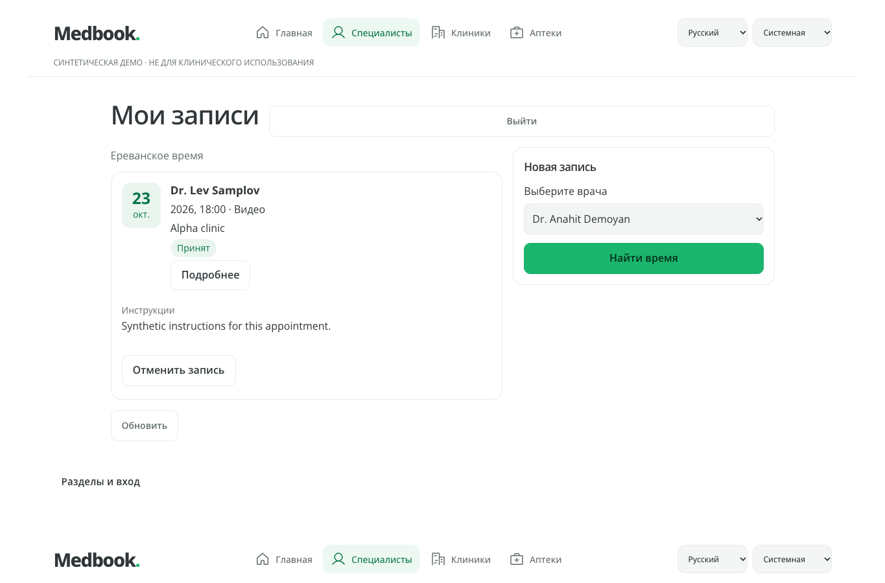
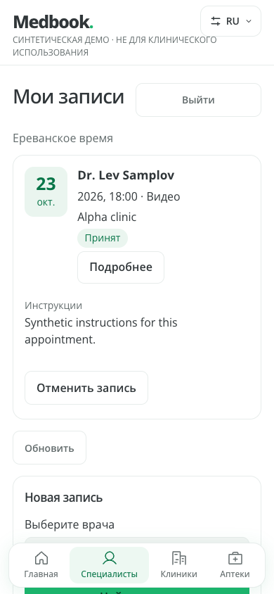

Состояние на 24 ноября 2026
Карта готовности
Medbook
От первого действия пользователя до результата. Где путь уже работает, что прошли на стенде и что ещё мешает выпуску.
Как проходит работа
Выберите роль и путь. Стрелка показывает переход в целевом процессе. Состояние написано под каждым действием.
Открыть полную UML-схему на одном холсте
Общая схема Medbook
Скачать всю схему PlantUMLЧто пациент видит после записи
На закрытом стенде «Мои записи» открываются с главной. Пациент может посмотреть инструкции врача, отменить запись или перенести её. Освободившееся время смог занять второй пациент из листа ожидания.




Снимки закрытой сборки. Врач, пациент и инструкции в этом примере вымышлены.
Восемь слоёв ИИ и память
Модель ответила отдельно от приложения. В проверенном релизе подключение помощника для пациента и сотрудников выключено.
Реестр 396 требований
Для каждого требования указано, какую разработку нашёл отчёт. У каждого раздела — статус самой сверки. Готовность к работе в клинике проверяется отдельно.
В каком порядке выпускать
Основания и дата
Публичные экраны, серверные агрегаты и версия демо сверены 23 ноября. Путь от главной страницы до завершения приёма проверен 24 ноября в 00:28 по Еревану на закрытом HTTPS-стенде с вымышленными пациентами. В 00:53 врач подтвердил свою запись по тому же приёму. Выдача заключения пациенту остаётся открытой. В 01:47 по Еревану два пациента прошли сценарий переноса и листа ожидания. Для выпуска общей сборки ещё нужны независимое ревью и штатная проверка CI. В реестре использованы шесть отчётов по исходным требованиям. Четыре приняты, один на ревью, один заблокирован. Карта отражает этот срез.
Открыть полную презентацию